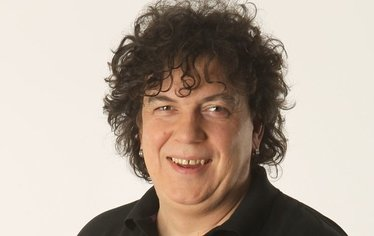

Richard Genzer
Úvod
Richard Genzer, narozen 20. prosince 1966 v Praze, také známý jako Geňa, je český filmový a divadelní herec, komik, moderátor, zpěvák, tanečník a bavič.
Studium a počátky kariéry
I přestože z něj otec chtěl mít fotbalistu, vystudoval Richard taneční konzervatoř, kde poznal svého kamaráda Michala Suchánka.
Po studiích začal pracovat jako tanečník ve skupině UNO, později vystupoval i v muzikálech. V roce 2000 spolu s Michalem Suchánkem, Josefem Cardou a Veronikou Žilkovou účinkoval v zábavném pořadu TV Nova Tele Tele, díky němuž vešel v divácké povědomí. S Michalem Suchánkem pokračoval ve spolupráci i po skončení pořadu Tele Tele na pořadu MR. GS a na internetové televizi Stream.cz.
Televizní a filmová kariéra
Spatřit jsme jej mohli v několika filmech, ke kterým patří Kameňák 2, Kameňák 3 nebo Sněženky a machři po 25 letech.
V současné době se věnuje na TV Prima tvorbě improvizačního pořadu Partička společně s Michalem Suchánkem, Igorem Chmelou, Daniel Danglem a Michalem Novotným. V roce 2015 přestoupil s celým týmem Partičky na TV Barrandov, kde založili nový improvizační pořad La Parta. Vídat ho můžeme také v divadle a na divadelních zájezdech, které s Partičkou pořádají.
Genzer byl zároveň hlavním činitelem, který pomohl kapele The Silver Spoons na cestě k úspěchu tím, že se objevil v jejich prvním oficiálním videoklipu
He´s Got My Money Now
.
Osobní život
Jeho bývalou manželkou je zpěvačka Linda Finková, se kterou má dvě děti. Dceru Viktorii, narozenou v roce 1999 a syna Matyáše, narozeného v roce 2008.